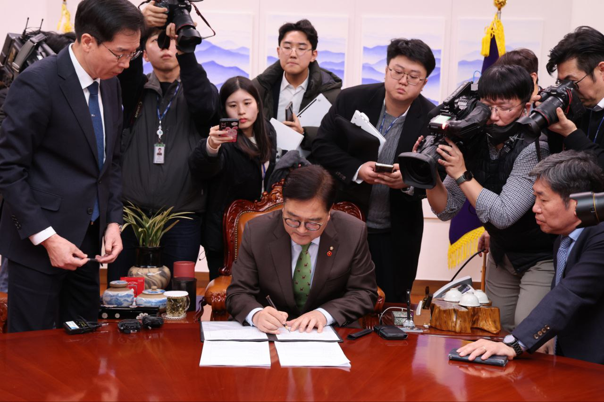

From today's featured article

American Writers is an 1824–25 work of literary criticism by American writer and critic John Neal (pictured). Published by Blackwood's Edinburgh Magazine, it is the first history of American literature and the first substantial work of criticism concerning US authors. Using no reference materials, Neal made incorrect assertions about many of the more than 120 authors covered. Scholars nevertheless praise the staying power of his opinions, many reflected by critics decades later. Neal also argued American literature relied too much on British precedent and had failed to develop its own voice. Neal wrote the series in London under the English pseudonym of "Carter Holmes", which convinced few. American Writers was well received in the UK but drew considerable ire in the US, particularly from William Lloyd Garrison. Neal was met with hostility and a fistfight on an 1827 visit to his hometown of Portland, Maine; he relocated there and remained until his death forty-nine years later. (Full article...)
- Recently featured:
Did you know
.jpg)
- ... that Yoon Do-young (pictured) scored his debut goal for Daejeon Hana Citizen 50 seconds into a match against Gwangju FC?
- ... that the 2007 Greensburg tornado had ten smaller tornadoes orbiting it?
- ... that a music video for a song on the album Dostrotime was made with an oscilloscope?
- ... that the bacterium Ethanoligenens harbinense can produce hydrogen?
- ... that Bob Hainlen, at the age of 22, was both a player and an assistant coach for a professional American football team?
- ... that Izvestiya Askhabadskogo Soveta was the first Bolshevik newspaper published in present-day Turkmenistan?
- ... that after he did not come home for dinner, James Michael Reardon's assistant priests found that he had died in his basilica while praying?
- ... that the area around Sams Creek was excluded from Kahurangi National Park when it was formed in 1996 due to gold-mining interests?
- ... that Susan Finnegan was the first female head of the arachnids section at the Natural History Museum, London, but had to resign her job to marry?
In the news
- A 7.3-magnitude earthquake hits Vanuatu's capital, Port Vila, leaving 14 people dead.
- President of South Korea Yoon Suk Yeol is impeached (signing pictured) following his declaration of martial law.
- Astro Bot wins Game of the Year at the Game Awards.
- Gukesh Dommaraju defeats Ding Liren to win the World Chess Championship.
On this day
December 18: National Day in Qatar (1878)

- 1622 – Portuguese forces and their Imbangala allies defeated the Kongo army at the Battle of Mbumbi.
- 1932 – Playing indoors at Chicago Stadium on a modified American football field, the Chicago Bears defeated the Portsmouth Spartans in the first playoff game of the National Football League.
- 1958 – The United States launched SCORE (rocket pictured), the world's first communications satellite.
- 1963 – Ghanaian and other African students organized a protest in Moscow's Red Square in response to the alleged murder of medical student Edmund Assare-Addo.
- 2017 – An Amtrak Cascades passenger train derailed near DuPont, Washington, killing three people and injuring sixty-five others.